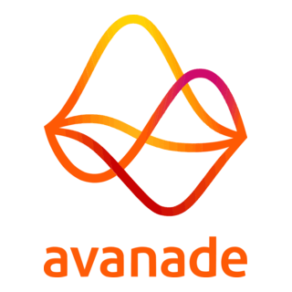
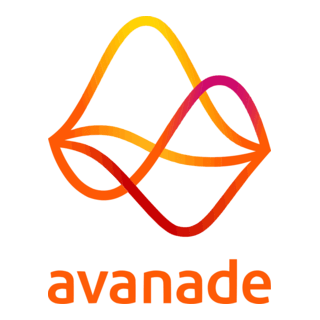

Some of my projects and certifications.
 

| Técnico (IST) - Academic & Technical Foundation
Technical depth and research-driven base, with the objective to show my capability to solve complex engineering problems, apply math and control theory, and implement AI/robotics systems.
Project 1: Multivariable, Nonlinear and Optimal Control
Designed a state feedback controller and state observer for a linear system (inverted pendulum), simulated it in SIMULINK, and implemented it in real hardware, using A/D and D/A converters for real-time feedback.
Bridged simulation and real-time implementation by validating control algorithms on a physical inverted pendulum system.Project 2: Autonomous Systems
Developed an algorithm for a mobile robot, integrated it into the physical robot, and conducted both quantitative and qualitative performance evaluations. Implemented using ROS (Robot Operating System).
Integrated computational algorithms with ROS-enabled mobile platforms and conducted performance benchmarking| Microsoft Certifications
Validates my cloud literacy and foundational data knowledge, and supports my transition to real-world systems beyond academia.
Certification 1: AZ-900 - Azure Fundamentals (Sep 2024)
Introduced to cloud principles, cost management, architecture models, and Azure services (compute, storage, databases).
Developed understanding of Azure governance, networking, and identity fundamentals.Certification 2: DP-900 - Azure Data Fundamentals (Jan 2025)
Focused on data storage, processing, and analysis concepts, including relational/non-relational databases, analytics, and data ingestion tools.
Validated knowledge of Azure data workloads and the fundamentals of relational and analytical data solutions.| Avanade Internship - Professional & Cloud Data Experience
Where my academic foundation met industry practice, at the intersection of data, cloud migration, and system analysis.
Project 1: Santander - ETL and Data Optimization
Developed and optimized Python scripts and SQL queries for ETL processes, preparing data for visualization. Improved table structures for accessibility and performance.
Engineered and tuned ETL processes to enhance data performance and visualization readiness for Santander project.Project 2: EDP - Azure Resource Migration and Documentation
Supported planning and documentation for the migration of Azure resource groups from a centralized Data Lake to business-unit Datahubs. Investigated pipelines in Azure Data Factory, Databricks notebooks, and multi-cloud integration processes (AWS, GCP, Oracle).
Contributed to Azure cloud resource migration planning and data pipeline mapping for a major EDP transformation project.